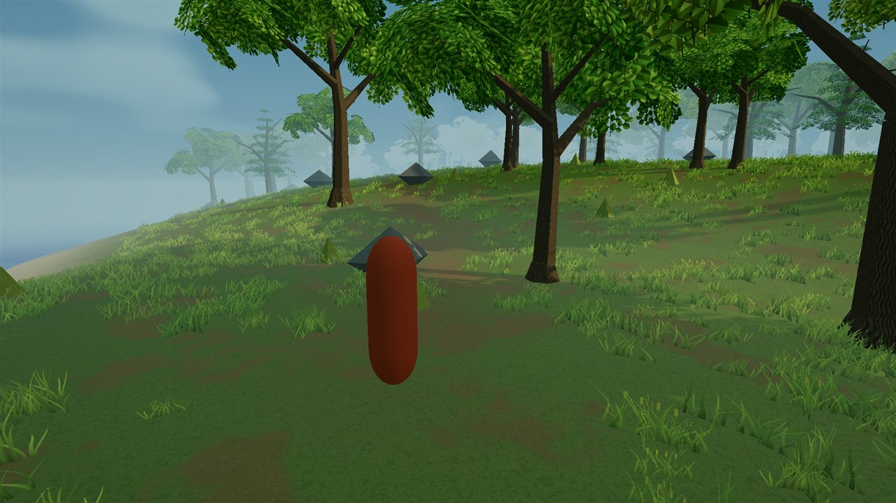

01 / CLEARING
The first steps
The third-person view across the forest clearing, with textured foliage, a worn trail, and fine ground cover.

01 / CLEARING
The third-person view across the forest clearing, with textured foliage, a worn trail, and fine ground cover.
